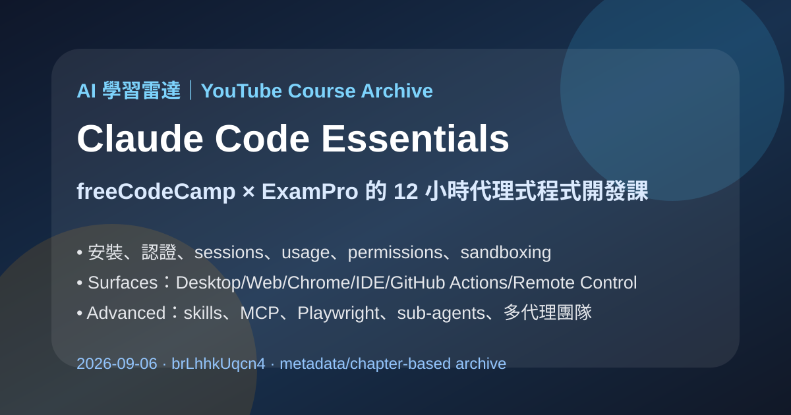
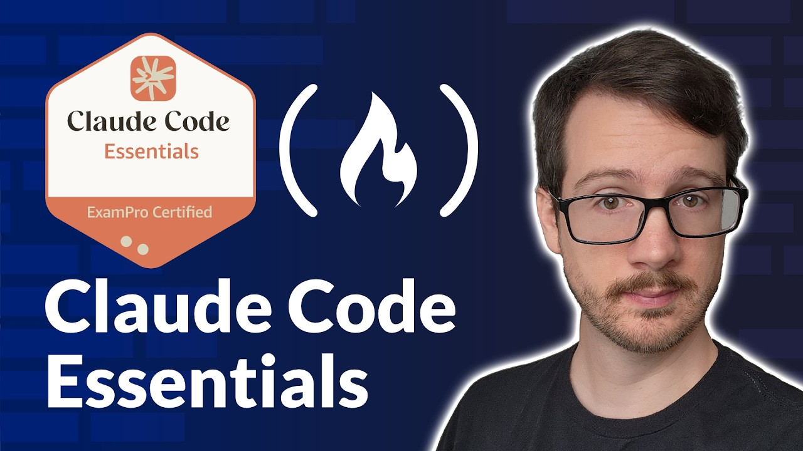

YouTube｜freeCodeCamp：Claude Code Essentials 12 小時代理式程式開發完整課

一句話摘要
freeCodeCamp.org 這支《Claude Code Essentials》把 Claude Code 從「會下 prompt 的 coding agent」拉到完整工程工作流：安裝、授權、session、context、permission、sandbox、安全 hooks、IDE / GitHub Actions / remote control、skills、MCP、sub-agents 與 multi-agent teams 都有章節。它很適合收進 AI 學習雷達，作為 Claude Code 課程設計、企業導入與工程團隊訓練的索引。
來源脈絡
- 分享文字：大家，由于 Facebook 私信权限限制，所以我把链接放在这里哦😉
- YouTube：https://www.youtube.com/watch?v=brLhhkUqcn4
- 影片標題：Claude Code Essentials
- 頻道：freeCodeCamp.org
- 課程開發：ExamPro
- 上傳日期：2026-03-23
- 片長：約 44,410 秒，約 12 小時 20 分鐘
- yt-dlp 擷取觀看數：約 517,522
- 補充資源：https://www.exampro.co/exp-claudecode-01

重要限制
YouTube Transcript API 回傳「Transcripts are disabled for this video」，因此本篇不是逐字稿摘要，而是以：
- YouTube oEmbed metadata
- yt-dlp metadata 與影片描述
- YouTube description 中的官方章節表
- ExamPro 課程頁可見大綱
- Anthropic Claude Code 官方產品頁 / 文件
進行章節式歸檔。若日後字幕開放，可再補一版 transcript-based 詳細筆記。
課程地圖
| 區段 | 時間範圍 | 學習重點 |
|---|---:|---|
| Introduction | 00:00:00–00:07:29 | 課程定位、講師介紹、Claude Code Essentials 目標。 |
| Core Concepts and Foundations | 00:07:29–07:16:55 | 代理式 coding 工具比較、code harness、Claude Code、agentic loop、models、安裝、認證、usage、sessions、context、settings、permission rules、sandboxing、headless tasks、debug、dev containers、hooks。 |
| Surfaces | 07:16:55–08:42:36 | Claude Code Desktop / Web、Claude Chrome、VS Code、JetBrains、GitHub Actions、remote control、computing follow-along。 |
| Advanced | 08:42:36–11:32:50+ | Security review、output styles、scheduling、code review、Agent SDK、Claude.md / rules、auto memory、agent skills、MCP、Playwright、sub-agents、多代理團隊。 |
章節索引
| 時間 | 章節 |
|---:|---|
| 00:00:00 | Intro & Meet your Instructor |
| 00:01:06 | Claude Code Essentials & Guest Instructor |
| 00:07:29 | Agentic Coding Tools & Comparisons |
| 00:14:01 | What is a Code Harness & Claude Code? |
| 00:16:59 | The Agentic Loop: Tool Calls & Models |
| 00:24:23 | Claude Modes & Additional Resources |
| 00:26:43 | Subscription, Usage & Auth Errors |
| 00:31:34 | System Requirements & Doctor CLI |
| 00:38:24 | Install CLI: PowerShell, CMD, Linux & VSC |
| 01:10:45 | Interactive Mode & Ctrl+C |
| 01:14:05 | Auth Tokens, Stats & Usage Limits |
| 01:31:04 | Sessions: Resume, Fork & Context Commands |
| 01:46:18 | Compact, Clear, Rename & Rewind |
| 01:56:07 | Status, Logout & Usage Commands |
| 02:04:18 | ccusage & API Key Setup |
| 02:26:39 | Cost Command & Third-Party Providers |
| 02:39:09 | API Keys: Bedrock, Foundry & Vertex AI |
| 03:01:44 | btw, Voice & Export Commands |
| 03:07:09 | Claude Code Projects & Scope |
| 03:13:05 | Status Line & Session Data |
| 03:23:14 | Settings & Permission Rules (Bash, MCP, WebFetch) |
| 04:04:16 | Permission Modes & CLI/GUI Editing |
| 04:16:43 | Sandboxing & Dangerous Scenarios |
| 04:55:13 | VIM Mode & Model Configuration |
| 05:00:10 | Fast Mode & Image Reasoning |
| 05:10:18 | Effort Command & Headless Tasks |
| 05:27:46 | Escaping Logic & Debug Mode |
| 05:34:21 | Dev Containers with Claude Code |
| 05:54:24 | Common Workflow Follow Along |
| 06:17:31 | Notification Hooks & Security Hooks |
| 07:16:55 | Claude Code Surfaces: Desktop & Web |
| 07:35:28 | Claude Chrome & Browser Extensions |
| 07:45:25 | VS Code & JetBrains IDE Integration |
| 07:59:11 | GitHub Actions & Remote Control |
| 08:40:48 | Computing Follow Along |
| 08:42:36 | Security Review & Output Styles |
| 08:58:05 | Simplify Command & Scheduling |
| 09:07:42 | Code Review & Agent SDK |
| 09:15:12 | Persistent Context: Claude.md & Rules |
| 09:47:03 | Claude Auto Memory & Troubleshooting |
| 09:56:27 | Agent Skills: Activation, Scripts & Dynamic Content |
| 10:27:06 | MCP with Claude Code & GG |
| 10:47:09 | MCP Doom & Playwright Integration |
| 11:32:50 | Sub-agents & Multi-Agent Teams |
對 AI 學習雷達的價值
- 它提供完整 Claude Code 學習路線：從初學者安裝，到團隊級 workflows 與多代理協作。
- 課程不只教「如何叫 AI 寫程式」，而是把 session、context、permission、usage、sandboxing 與 hooks 放進工程治理框架。
- 對 Hermes / Codex / Claude Code 課程設計來說，這支影片可拆成多週模組：基礎、日常工作流、安全與權限、MCP、sub-agents、CI/CD。
- 對企業導入來說，最值得優先看的不是花俏生成，而是 03:23:14 之後的 Settings & Permission Rules、04:16:43 Sandboxing、06:17:31 Notification Hooks & Security Hooks，以及 Advanced 區段的 Security Review / Agent Skills / MCP / Sub-agents。
實務導入檢核表
- 先確認團隊使用 Claude Code 的身分驗證方式：訂閱、API key、Bedrock、Foundry、Vertex AI 或第三方 provider。
- 建立專案層級的 `CLAUDE.md` / rules，定義測試指令、不可觸碰範圍、commit 規範與安全邊界。
- 把 permission rules 分成 read-only、可寫入、需人工確認、禁止執行四層。
- 對 shell、MCP、WebFetch、瀏覽器自動化與 GitHub Actions 建立最小權限。
- 使用 hooks 做通知、安全掃描、敏感檔案保護與部署前檢查。
- 在導入 sub-agents / multi-agent teams 前，先定義任務拆分、驗收格式、測試責任與回滾策略。
官方交叉驗證
Anthropic 官方 Claude Code 產品頁將 Claude Code 定位為可直接在 codebase 中工作、從 terminal / IDE / Slack / web 等 surfaces build、debug、ship 的 coding agent，並列出 macOS、Linux、Windows 支援。這與影片章節中「Surfaces」與 IDE / GitHub Actions / remote control 的學習路線一致。
官方入口：
https://claude.com/product/claude-code
官方文件：
https://docs.anthropic.com/en/docs/claude-code/overview
ExamPro 課程頁也確認本課程名稱為「ExamPro Claude Code Essentials」，目標是 Learn how to use Claude Code to build real-world agentic coding workflows，並列出 Introduction、Core Concepts and Foundations、Surfaces、Advanced 等課程大綱。
ExamPro：
https://www.exampro.co/exp-claudecode-01
建議觀看順序
若時間有限，可優先看：
- 00:07:29 Agentic Coding Tools & Comparisons
- 00:16:59 The Agentic Loop
- 01:31:04 Sessions: Resume, Fork & Context Commands
- 03:23:14 Settings & Permission Rules
- 04:16:43 Sandboxing & Dangerous Scenarios
- 06:17:31 Notification Hooks & Security Hooks
- 08:42:36 Security Review & Output Styles
- 09:15:12 Persistent Context: Claude.md & Rules
- 09:56:27 Agent Skills
- 10:27:06 MCP with Claude Code
- 11:32:50 Sub-agents & Multi-Agent Teams
原始連結
YouTube：
https://www.youtube.com/watch?v=brLhhkUqcn4
freeCodeCamp：
https://www.youtube.com/@freecodecamp
ExamPro 補充資源：
https://www.exampro.co/exp-claudecode-01
Claude Code：